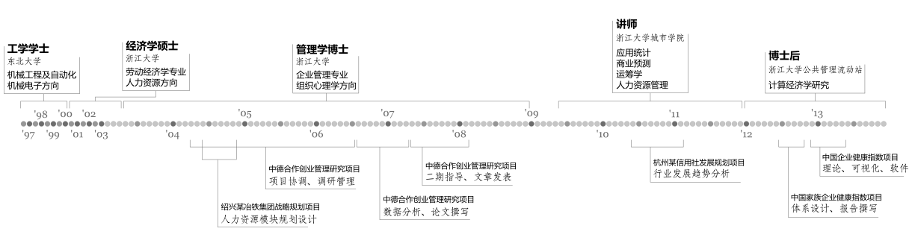

网站介绍
网站简介
建立这个网站的目的是分享自己这些年积累的与分析有关的技术。网站的名称是 wwguo/cn，原因是我的网名通常是 wwguo，如果已被注册的话就会用 wwguocn。这两个用户名用的人很少，总有一个可用。
关于分析
因为学科专业和个人兴趣的关系，我见过各种不同领域背景从事分析的人。不同背景的人对分析的理解可谓天差地别。有认为分析是用严格的流程还原事实，有认为分析是用统计方法寻找模式，还有认为分析是用搜索技术寻找最优结果。分析的含义如此多样是因为与分析有关的内容颇为繁杂。
分析按照技术内容可以分为：
- 模型设计
- 数据获取
- 定量方法
- 定性程序
- 数据呈现
上述后三个部分与领域较小，模型设计和数据获取则与领域的关系很大。特别是数据获取，不同领域用的方法可谓八仙过海，各显神通。按照内容特点，我将分析大致分为定量、定性、呈现和模型四个部分。每个部分的内容都以实用为导向，重点是可操作性。因此基础知识简明，说明如何使用即止。鉴于模型设计与领域的关系十分密切，我只能尽力而为。
网站主要分享技术向的内容，非技术性思考主要发在博客。我的博客是 关于分析。
发布协议
本站发布的所有内容均以《共创协议：署名－非商业性使用－禁止演绎 3.0》发布，协议内容简介如下：
根据协议，您可以：
复制、转发和传播作品。
惟须遵守下列条件：
署名 您必须按照作者指定的方式对作品进行署名。
非商业性使用 您不得将作品用于商业目的。
禁止演绎 您不得修改、转换或者以作品为基础进行创作。
个人介绍
郭维维，网字翼韬，号wwguo/cn。少时无知，埋头科考，罔顾真识，待入郡学，方始觉悟，然，历十数载，终不得道，忝得博士空名。初，入辽省郡学，习机电，时计算机兴，诸生皆以此学为上，维随波逐流，得些许皮毛。后入浙省郡学，习经济，得领悟，未入道，再转学府他科攻I-O心理。彼时HR学大行其道，维亦接连拜入两位泰斗门下，期冀修成正果，惟心性不坚，渐入魔道，痴迷分析方法而不拔。入世后为教，授应用统计、商业预测、运筹学并HRM，遂入魔域而不可返也。三载未满，魔心动，企求计算分析方法，去职充任博士后，浅尝滋味便届期满，咨访朋僚，走谒先辈，谋举逾月后履职研究总监。自入魔道，睹牛鬼蛇神良多，遇魑魅魍魉无数，喜不自胜，嗟嗟唤妖伴同行，孜孜盼魔功日胜。为聚同道共襄魔事，建微信公号，曰“分析国”。
职业生涯
{kind=link}
各种能力

联系信息
欢迎联络，通过页面底部图标的电子邮件联系我、访问我的 Tumblr 博客，扫二维码添加我的微信号（wwguocn）和微信公号（分析国）：